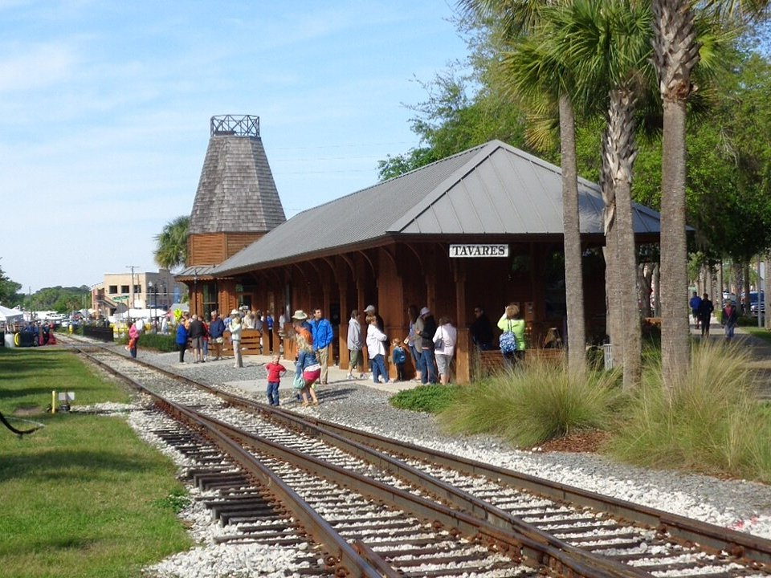

Cliff-top · Luxury
Post Ranch Inn
Adults-only ocean and tree houses 1,200 feet above the Pacific, with Sierra Mar restaurant.
Official details for Post Ranch InnCliffs, redwoods and the Pacific.
Big Sur is the wild stretch of coast where the Santa Lucia Mountains drop straight into the Pacific, and Highway 1 clings to the cliffs above it. Land at Monterey, drive south past Bixby Bridge, stay at a cliff-top resort or a cabin in the redwoods, watch McWay Falls pour onto the beach, and have lunch on the terrace at Nepenthe.

Time illustration: direct distance at 150 KTAS plus 15 minutes for departure and arrival, matching the discovery page. Use ForeFlight for your actual flight plan.
There is no public airport in Big Sur. Land at KMRY, Monterey Regional, a towered field with a 7,175-foot runway; Big Sur Village is about 45 minutes south on Highway 1.
Monterey Regional Airport, Monterey, CA
Check Highway 1 conditions before you go; landslides close sections of the road some winters (Caltrans QuickMap). Summer fog often means an instrument approach at Monterey. No live fuel price is shown.
Central California coast: marine layer and fog much of the summer, often burning off by late morning and returning in the evening; clear, calm fall days; winter storms and gusty winds over the coastal ranges. About 2100 nm from Myrtle Beach: two long days each way with several fuel stops. Plan a week, or overnight on the way out and back.
Rates and availability need travel dates. Resorts book months ahead.
Adults-only ocean and tree houses 1,200 feet above the Pacific, with Sierra Mar restaurant.
Official details for Post Ranch InnAn adults-only resort in the redwoods and meadows above the coast.
Official details for Alila Ventana Big SurRooms and a restaurant on the river.
Official details for Big Sur River InnReserve weekend dinners.
A family-run terrace 800 feet above the ocean since 1949.
Official details for NepentheWood-fired breads and pastries.
Official details for Big Sur BakeryPull over only at signed turnouts.
An 80-foot waterfall onto a beach at Julia Pfeiffer Burns State Park.
California State ParksThis prototype links to the local visitor site. It does not yet match events to your travel dates.
Clear days after the summer fog.
Big Sur Chamber for Best weatherGreen hills and wildflowers on the coast.
Big Sur Chamber for WildflowersCheck road conditions; slides can close Highway 1.
Caltrans QuickMap for Storm seasonCheck the local calendar when choosing a weekend, and confirm dates and tickets with the organizer.
A sample coastal weekend. This is a two-day flight each way; plan a week. No bookings or availability confirmed.
Land at KMRY late morning.
Bixby Bridge and lunch at Nepenthe.
Back to Monterey before the evening fog.
Land at KMRY, subject to weather and your actual flight plan.
Drive south past Bixby Bridge.
Dinner at Sierra Mar.
McWay Falls.
Lunch at Nepenthe.
Sunset from your room.
Breakfast at Big Sur Bakery, then north to Monterey.
Return the car and allow time at the FBO.
Fog returns to Monterey in the evening; leave by early afternoon.
McWay Falls.
Point Lobos.
Sunset dinner at Sierra Mar.
These details make the difference between an appealing list and a usable getaway.
Resort first, then a car.
About 2,100 nm from Myrtle Beach: two long days each way.
Check Highway 1 before you go.
April to May and September to October.
Research-based selections, not personal-visit endorsements. Researched November 1, 2026. Confirm hours, prices and availability directly with each place before booking. Spotted something out of date, or have a favorite we missed? Email us at hello@wingawayweekends.com.
WingAway Weekends helps you discover the destination. Use ForeFlight and current official aviation information for route, performance, weather, NOTAMs and preflight decisions. Flight planning and PIC responsibility stay with the pilot.